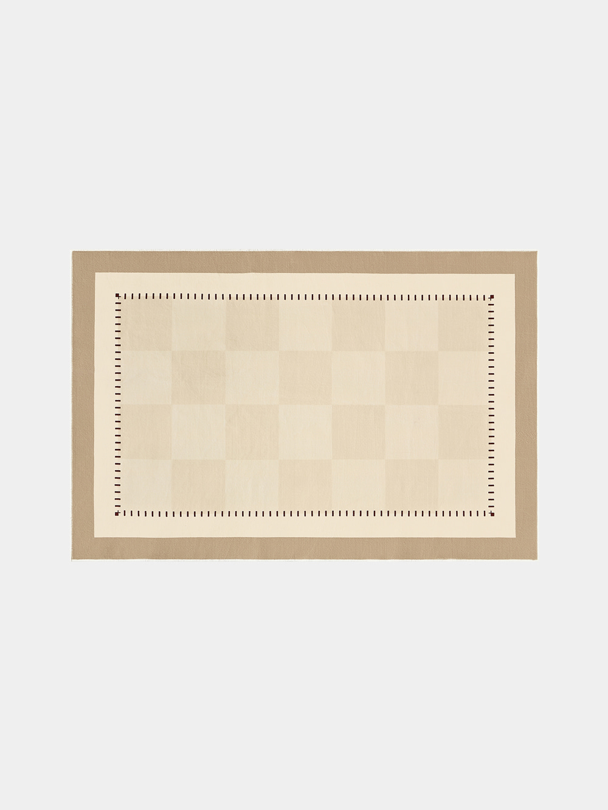
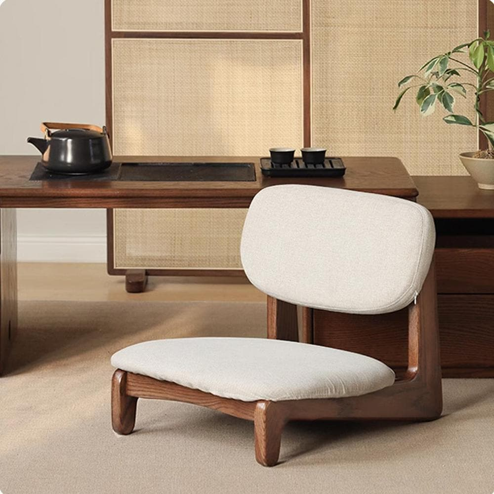
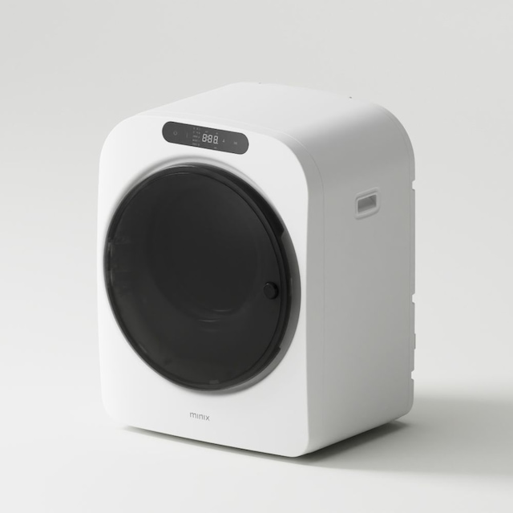

실측 반영 전 AI 분위기 참고 이미지 · 155cm 최상단 판의 보유 헬멧·도자기 오브제, 아래 커피 도구·LP판과 약120cm 트리의 분위기를 보려는 이미지입니다. 실제 시공·촬영 사진이 아니며, 이번 와이드 L(86cm) 및 실측을 반영한 가구 위치·통로 폭을 보여주지 않습니다. 설치와 배치는 아래 3D 및 실측·가전 검토를 따로 확인해 주세요. 색상·디테일은 실물과 다를 수 있어요.E안 실제 3D 화면 · 무지 SUS 떡갈나무 와이드 L(86×41×175.5cm), 바닥 약25.5cm 선반의 2단 와이드 서랍+라탄 바구니, 155cm 최상단 판의 보유 헬멧·도자기 오브제, 118cm 칸의 핸드드립 도구, 81cm 칸의 LP판 4장, 오른쪽 아레초930 오디오 코너와 노미아 [new] t4 - 오트밀 러그(150×200cm) 및 원목 접이식 좌탁(90×50×32cm).
2026.11.3 · 노미아(NOMIA) 거실 러그 적용 (150×200cm 후보 3종 비교)
기존 단색 베이지 러그(이씨라메종 올리 워셔블 러그 150×200cm · 155,400원) 대신, E안의 무지 SUS 떡갈나무 선반 + 더레인 아레초930 오크 + 리사보 식탁 + 블랙 오디오 포인트와 가장 조화롭게 어우러지는 노미아(NOMIA) 150×200cm(M 사이즈) 러그 3종을 비교해 1순위 [new] t4 - 오트밀 러그(85,900원 · 무료배송)를 E안 3D와 견적에 반영했습니다(기존 러그 대비 69,500원 절감).

E안 3D 적용 · 1순위 추천: 노미아 [new] t4 - 오트밀 러그 · M (150×200cm)
바깥쪽 웜 토프베이지 테두리와 안쪽 크림 프레임, 짙은 브라운 스티치 점선 테두리, 중앙 4×6 톤온톤 오트밀 체크가 어우러져 무지 떡갈나무·아레초 오크와 블랙 오디오 포인트를 따뜻하게 묶어 줍니다. 소재: Polyester · t4 등급(약1cm 부드러운 단모, 쿠션감·논슬립·워셔블)
85,900원
기본배송 무료 (100×150 기본 42,900원 + 150×200 옵션 +43,000원 · 기존 155,400원 대비 -69,500원)
샌드 베이지 바탕에 세이지 그린·브라운·뮤트 블루 가로 스트라이프가 들어가 창가 트리·화분과 오크 가구 사이에 산뜻한 포인트를 줍니다. t2 등급(탄탄하고 관리가 쉬운 단모). 밝은 프렌치 프레임 스타일인 노미아 [new] t4 - 시폰 러그(150×200cm · 85,900원) ↗도 같은 가격으로 선택할 수 있습니다.
85,900원
기본배송 무료 (100×150 기본 45,900원 + 150×200 옵션 +40,000원)
선택 옵션: 떡갈나무 / 와이드 L (86cm) 397 폭86 × 깊이41 × 높이175.5cm (내부 유효폭 80cm) MDF+떡갈나무 베니어 · 선반5장 · 스테인리스 프레임
449,000원 현재 일시품절 (기존 기본L 대비 +70,000원)
대형화물 배송 35,000원(2단 서랍과 합배송 가정 시 50,000원 반영 · 두 상품 합계 530,900원으로 재입고 후 동시 주문 시 50만원 이상 무료배송 적용 가능 여부 확인 권장). E안은 5장의 높이를 조정해 아랫칸에 2단 서랍과 라탄 바구니를 함께 수납했습니다.
2026.11.5 · 무지 SUS 선반에 들어가는 서랍장·수납케이스 후보 8종 비교 (깊이 37cm 모듈 · 여러 개 병렬/적층)
무인양품 목제 수납 케이스 서랍식 2단 와이드(52×37×34.5cm · 81,900원)가 품절일 때, 무지 SUS 선반 안쪽에 튀어나오지 않고 쏙 들어가는 현재 구매 가능한 서랍장·수납케이스 8종입니다. 무지 SUS 선반의 실제 나무판 깊이는 39.5cm(바깥 프레임 41cm), 기본 2칸 간격의 안쪽 유효 높이는 35cm이며, 기둥 안쪽 유효 가로폭은 E안 와이드 L(86cm)이 80cm, F·D안 기본 L(58cm)이 52cm입니다. 따라서 깊이 37cm 이하(또는 26~28cm) 모듈을 2~3열로 나란히 놓고 2단으로 쌓는 조합이 가장 깔끔하게 맞습니다.
원목 무늬목 2단 서랍 2개 병렬 · 이케아 KALLAX 칼락스 인서트+서랍2 (참나무무늬 / 화이트)
1개 규격: 폭33 × 깊이37 × 높이33cm · 화이트스테인 참나무무늬(오크) / 화이트 무지 SUS 선반 깊이(39.5cm)와 높이(35cm)에 깊이 37cm · 높이 33cm로 쏙 들어가는 2단 서랍 유닛입니다. 뒷면까지 깔끔하게 마감되어 오픈 선반 위에서도 완성도가 높고, 서랍 레일이 달려 있어 여닫기 편합니다. • 와이드 L(내부 80cm):2개 나란히 병렬 배치 시 폭66 × 깊이37 × 높이33cm가 되어 총 4칸 오크 서랍장이 완성되고 옆에 14cm 여유가 남습니다(1개만 두고 옆에 바구니 배치도 가능).
1개 규격: 폭26.5 × 깊이37 × 높이16.2cm · 베이지 / 화이트그레이 / 블랙 (국내제조) 깊이가 정확히 37cm이면서 무지 PP 케이스에는 없는 따뜻한 매트 베이지 컬러를 고를 수 있어 떡갈나무 선반·노미아 오트밀 러그와 톤온톤으로 잘 어울립니다. 상하단 결합 홈이 있어 여러 단을 쌓아도 흔들리지 않습니다. • 와이드 L(내부 80cm):3열×2단 = 6개(폭79.5 × 깊이37 × 높이32.4cm · 65,400원)로 80cm 내부폭에 5mm 여유로 딱 맞게 들어가거나, 2열×2단 = 4개(폭53 × 깊이37 × 높이32.4cm · 43,600원)로 구성할 수 있습니다.
1개 규격: 폭37 × 깊이28 × 높이37cm · 천연 떡갈나무 무늬목 (재고 보유) 품절된 52cm 와이드 서랍 대신 현재 즉시 구매 가능한 무인양품 순정 떡갈나무 원목 서랍장입니다. SUS 떡갈나무 선반과 나뭇결·색상이 100% 일치합니다. • 와이드 L(내부 80cm):2개를 나란히 놓으면 폭74 × 깊이28 × 높이37cm(2단+4칸 혼합 추천)가 되어 좌우 6cm 여유로 깔끔하게 들어갑니다. • 주의(높이 37cm): 기본 선반 간격(안쪽 높이 35cm)보다 2cm 높으므로, 선반 1장을 핀 1칸 위로 올리거나 최상단 칸(유효 높이 53.5cm)에 넣어야 합니다.
79,900원 (2단) / 89,900원 (4칸) (개별배송 15,000원 · 무지 50만원 이상 합산 시 무료)
2단 79,900원 · 4칸(2×2) 89,900원(4칸 보기 ↗) · 하프 2단(37×28×18.5cm · 59,900원)은 높이 35cm 기본 칸에도 바로 수납 가능
1개 규격: 폭33 × 깊이37 × 높이33cm · PB + LPM 화이트 코팅 + 금속 레일 이케아 칼락스 인서트와 동일한 폭33 × 깊이37 × 높이33cm 규격의 목제 2단 서랍장으로, 손잡이 돌출 없는 심플한 사선 그립 디자인이라 여러 개를 나란히 두었을 때 일체감이 좋습니다. • 와이드 L(내부 80cm):2개 병렬 배치 시 폭66 × 깊이37 × 높이33cm(총 4서랍 · 55,800원)로 품절된 무지 서랍(81,900원+배송 15,000원)보다 약 4만원 저렴하게 목제 서랍을 구성할 수 있습니다.
깊은형: 폭37 × 깊이26 × 높이17.5cm · 얕은형: 폭37 × 깊이26 × 높이12cm 가로 폭이 37cm로 넓은 와이드형 서랍입니다. 깊이가 26cm라 선반 앞쪽 또는 뒤쪽에 여유 공간을 남기면서 깔끔하게 정렬할 수 있습니다. • 와이드 L(내부 80cm):2열×2단 = 4개 조합 시 폭74 × 깊이26 × 높이35cm(깊은형 4개 79,600원 / 깊은형2+얕은형2 75,600원)로 선반 한 칸에 와이드 서랍 4개가 꽉 차게 들어갑니다.
각형 대(L): 폭35 × 깊이37 × 높이26cm · 각형 소(S): 폭35 × 깊이37 × 높이16cm 무지 SUS 선반 규격에 맞춰 제작된 깊이 37cm 패브릭 수납함입니다. 안쪽이 코팅되어 각이 무너지지 않고, 앞 손잡이를 서랍처럼 당겨 꺼낼 수 있습니다. 지퍼 뚜껑이 달린 덮개식을 고르면 먼지 유입도 완벽히 차단됩니다. • 와이드 L(내부 80cm):2개 나란히 배치 시 폭70 × 깊이37cm(23,800~31,800원)로 가장 가볍고 경제적으로 숨김 수납을 완성합니다.
23,800원 ~ 31,800원 (2개) (개당 10,900~15,900원 · 3만원 이상 무료배송)
비교 기준점 (일본 무지 순정 일체형) · 무인양품 해외직구 SUS 전용 와이드 서랍 유닛 2단
폭84.5 × 깊이40 × 높이37cm · 무인양품 일본 직구 정품 (SUS 86cm 와이드 프레임 직결형) 선반 위에 얹는 케이스가 아니라 SUS 와이드(86cm) 양쪽 스테인리스 기둥에 직접 볼트로 체결하는 풀사이즈 순정 2단 서랍 유닛입니다. 일체감은 가장 뛰어나지만 일본 해외직구 상품이라 배송비 포함 가격이 선반 본체보다 비싸, 위 무지 PP 서랍(4~6개 · 4.9~7.4만 원)이나 칼락스·수비르 병렬 조합(4.3~9.5만 원)이 가성비 면에서 훨씬 유리합니다.
⚠️ 치수 초과로 제외한 서랍장 주의: 검색 시 자주 나오는 룸앤홈 데일리 믹스앤매치 모듈 서랍장(깊이 42.5cm), 씨밀렉스 래폴드 틈새 서랍장(깊이 42cm), 얼라이브즈 모노 2단 서랍장(40×43×43cm), 마켓비 피하/MKB 철제 서랍장(깊이 41cm)은 무지 SUS 선반 나무판 깊이(39.5cm)보다 1.5~3.5cm 앞으로 튀어나오거나 뒤쪽 X자 크로스바에 걸리므로 구매 대상에서 제외했습니다.
2026.11.6 업데이트 · 무지 SUS 와이드 L + 서랍(약 60~99만 원) 대용 가성비 선반·수납장 후보 12종 비교
무인양품 SUS 떡갈나무 와이드 L(449,000원+배송 35,000원)에 서랍장(해외직구 54.5만 원 또는 원목·모듈 서랍 10~18만 원)까지 더하면 선반 하나에 약 60만~99만 원(아레초930 포함 시 90만 원대)이 들고 현재 본체도 일시품절입니다. 이를 8만~30만 원대(최대 40만 원대)로 훨씬 합리적이면서 즉시 구매할 수 있는 무지 SUS 대용 선반장 12종을 ① 별도 서랍 구매가 필요 없는 800폭 5단 수납/서랍 일체형(15만~30만 원대), ② 무지 SUS 실루엣 그대로인 스텐·스틸 프레임 5단 선반(8만~19만 원대), ③ 아레초930 오크 맞춤 원목·미닫이 선반장으로 정리했습니다.
폭80 × 깊이32 × 높이174cm · 메이플 선반 + 화이트 슬림 스틸 프레임 + 하부 양문형 수납장 무지 SUS 와이드 L(86×41×175.5cm)과 가로·높이가 거의 똑같은(80×174cm) 5단 스틸 프레임 + 우드 선반 구조이면서, 하단에 깔끔한 여닫이 수납장이 기본 포함되어 있어 별도로 서랍장을 찾을 필요가 없습니다! 데스커 전문 시공 기사님이 무료로 방문 조립·설치해 주어 흔들림도 없습니다.
폭80 × 깊이30 × 높이177.4cm · 덴버오크 선반 + 화이트/블랙 스틸 프레임 + 하부 2도어 수납장 옆에 놓이는 더레인 아레초930 오크와 잘 어울리는 따뜻한 덴버오크 상판에 슬림한 철제 기둥과 하부 여닫이 수납장을 결합한 모델입니다. 상부 3단 오픈 선반에 헬멧·핸드드립 도구·LP를 진열하고 하부 도어장에 자잘한 짐을 모두 숨길 수 있습니다(도어 없는 5단 오픈형은 226,000원).
폭80 × 깊이28.5 × 높이194.2cm · 화이트오크 선반 6장(5단) + 슬림 스틸 프레임 + 측면 X자 와이어 무지 SUS처럼 슬림한 철제 기둥과 X자 텐션 와이어에 밝은 화이트오크 선반을 얹은 현대리바트 정품입니다. 쿠폰 적용 시 14만 원대(무료배송·리바트 기사 직접 배송)로 무지 SUS 와이드 L(48.4만 원) 대비 33만 원 이상 저렴합니다.
145,820원 (쿠폰가 · 정가 159,000원 · 무료배송)
화이트오크 / 화이트 / 월넛 / 블랙 동일가 · 무료배송(리바트 직배송) · 평점 4.8 (리뷰 172개)
한샘 샘 수납형: 폭80 × 깊이29.4 × 높이188cm (쿠폰가 155,550원 · 무료시공) 내추럴오크 선반에 따뜻한 패턴베이지 하부 양문 도어가 달린 국민 수납 책장으로, 한샘 기사님이 무료 배송·시공해 줍니다. 한샘 플롯 수납형(단독형 5단 80×40cm · 쿠폰가 417,350원): 무지 SUS처럼 측면 금속 모듈 프레임 + 깊이 44.6cm 깊은 선반 + 하부 도어장이 결합된 상위 라인입니다(플롯 보기 ↗).
원목 5단 + 2단 원목서랍 기본 포함 · IKEA IVAR 이바르 (서랍형 89cm) & FJÄLLBO 피엘보
이바르: 폭89 × 깊이30 × 높이179cm (197,900원) · 소나무 원목 선반 5장 + 원목 2단 서랍 기본 포함 무지 SUS 와이드 L + 2단 원목 서랍과 똑같은 '키큰 5단 오픈 선반 + 2단 원목 서랍' 구조를 19만 원대에 한 번에 해결하는 이케아 정품 세트입니다(깊이 50cm 옵션도 선택 가능). 피엘보: 폭51 × 깊이36 × 높이136cm (99,900원) · 소나무 원목 상판 + 블랙 스틸 프레임의 초가성비 대안(피엘보 보기 ↗).
197,900원 / 99,900원 (무지+서랍 대비 40만 원 이상 절감)
이케아 배송비 별도 · 이바르는 하부 양문 수납장 결합형(80×30×120cm · 185,000원) 옵션도 선택 가능
폭80 × 깊이35~40 × 높이154cm (5단 가로 800 옵션) · 스테인리스 스틸 프레임 + 뒤쪽 X자 크로스바 무인양품 SUS 스테인리스 유닛선반처럼 둥근 스테인리스 기둥과 뒤쪽 X자 보강대 구조를 그대로 갖춘 초가성비 스텐 선반입니다. 5단 가로 800mm 모델이 배송비 포함 83,800원이라 무지 SUS 가격의 1/6로 스텐 모듈 감성을 낼 수 있습니다.
폭80 × 깊이37.5 × 높이170cm · 마호가니 원목 다리 + 무늬목 바디 + 스틸 손잡이 비초에 606 스타일의 벽선반 감성을 자립형 원목 다리 프레임으로 구현한 스테디셀러입니다. 상부 2단 오픈 선반 + 중부 매거진/LP 전시 렉 + 중하부 미닫이 수납장 + 하부 선반까지 역할 분담이 완벽하고 전문 기사님이 무료로 설치해 줍니다(색상은 아레초 오크보다 반 톤 진한 티크 브라운).
깊이 41cm 1:1 치수 도어형 · 데스커 600폭 5단 깊은 수납형 책장 (하부도어형)
폭59 × 깊이41 × 높이174cm · 라이트오크 + 화이트 도어 (DSCC465S) 무지 SUS 기본 L(58×41×175.5cm)과 가로·깊이·높이가 1cm 이내로 완전히 동일한 1:1 치수 대체재입니다! 일반 책장(깊이 29cm)과 달리 깊이가 41cm로 깊어 헬멧·커피 도구가 여유 있게 들어가고, 하부 여닫이 도어 수납장이 기본 포함됩니다(800폭인 DSCB0835A · 80×41×174cm · 348,000원 옵션도 선택 가능).
236,000원 (무료배송·무료설치 · 800폭 깊은형은 348,000원)
무료배송 · 데스커 전문 시공 기사 무료 설치 · 평점 4.7 (리뷰 139개) · 컴퓨터 책상(데스커)과 브랜드 통일
아레초930 동일 브랜드 / 중저상형 · 더레인 핀 화이트오크 3단 선반(86cm) & 장미맨숀 리브 책장
더레인 핀: 폭86 × 깊이30 × 높이88.5cm (263,000원 · 무료배송) 오른쪽 더레인 아레초930 오크와 같은 브랜드라 밝은 오크 나뭇결과 톤이 가장 자연스럽게 이어지며, 높이 88.5cm 중저상형이라 거실 시야가 탁 트입니다. 장미맨숀 리브 원목 책장 01(100×35×110cm · 배송포함 373,700원): 상부 2단 오픈 선반 + 하부 플랩도어 수납장 + 세로 LP 꽂이가 하나에 들어간 원목 수납장입니다(리브 책장 보기 ↗).
263,000원 / 373,700원 (아레초 동일 브랜드 / 오픈+플랩도어+LP칸)
더레인 핀: 1유닛(3×1) 무료배송 · 평점 4.9 (리뷰 37개) / 코헨 피엘 Cabinet(71×40×100cm · 440,000원)도 선택 가능
2026.11.6 · 방석 대체 ‘낮은 의자 + 쿠션’ 후보 8종 비교 (초저상 원목 좌식의자 vs 로우 쿠션 체어)
바닥에 납작하게 깔리는 매트형 좌식소파 대신, 낮은 의자 프레임(원목 낮은 다리·코타츠 체어·저상 프레임·낮은 스툴) 위에 폭신한 좌판·등받이 쿠션이 올라간 형태의 후보 8종입니다. 거실 러그 위 좌탁(E안 원목 좌탁 높이 32cm / 이케아 목스보다 높이 30cm)과 함께 쓸지에 따라 ① 좌면 높이 8~20cm 초저상 의자형(1~4번)과 ② 좌면 높이 27~48cm 낮은 다리·스툴형 로우 체어(5~8번)로 나누어 고르실 수 있습니다. (현재 견적 합계는 한샘 휴 모드 56,900원 기준을 그대로 유지합니다.)

좌탁 호환 1순위 (좌고 20cm) · 미드센추리 패브릭 원목 좌식 등받이 낮은의자 체어
폭54.4 × 깊이58 × 높이48cm (좌면 높이 18~20cm · 등받이 폭52×높이25cm) · 우드(오크) / 월넛 바닥에 그냥 놓는 방석이 아니라 FAS등급 북미산 오크(참나무) 원목 낮은 다리 프레임 위에 고밀도 스펀지 아이보리 패브릭 좌판 쿠션 + 둥근 등받이 쿠션을 올린 정통 낮은 원목 쿠션 의자입니다. 좌면 높이가 20cm라 양반다리·무릎 굽힘이 편하면서 높이 30~32cm 좌탁과도 완벽 호환되며, 지퍼식 커버 분리 세탁이 가능합니다.
119,900원 (무료배송)
무료배송(해외직구) · 평점 4.33 (리뷰 3개) · 커버 지퍼 분리 세탁 가능 · 오크/월넛
폭46.5 × 깊이49 × 높이44.5cm (접었을 때 높이 22cm · 좌면 높이 8cm · 무게 4.4kg) 바닥 펠트 글라이드(받침발)가 달린 화이트 저상 의자 프레임 + 라텍스급 두툼한 스펀지 좌판 쿠션(분리·교체 가능) + S-Curve 틸팅 등판 구조입니다. 안 쓸 때 등받이를 앞으로 접으면 높이가 22cm가 되어 높이 30~32cm 좌탁(미룸 원목 좌탁·목스보다) 아래로 쏙 밀어 넣어 보관할 수 있습니다(높이 28cm 이상 좌탁 하부 수납 공식 지원).
109,000원 (무료배송 · 시디즈 1년 보증)
무료배송 · 평점 4.5 (리뷰 377개) · 폴딩 시 높이 22cm 좌탁 하부 수납 · 좌판 쿠션 분리 가능
방석 폭41 × 깊이40cm (팔걸이 포함 폭49 × 깊이43cm) · 네츄럴 / 브라운 낮은 원목 의자 프레임에 양쪽 원목 팔걸이 + 케인 라탄 등받이 + 도톰한 베이지 직조 패브릭 좌판 쿠션을 결합했습니다. 양옆에 낮은 원목 팔걸이가 있어 바닥에서 앉고 일어날 때 손으로 짚기 편하며, 조립이 필요 없는 완제품으로 배송됩니다.
폭63 × 깊이75 × 높이78cm (좌면 높이 38cm · 좌판 62×52cm · 쿠션 두께 15~17cm) · 아이보리 외 3색 기존 바닥 대방석(63,800원)과 거의 같은 예산에 화이트/블랙 캔틸레버형 낮은 스틸 의자 프레임 위에 두께 15~17cm의 초도톰 코듀로이 대방석·등쿠션을 얹은 로우 라운지 체어입니다. 지퍼식 분리 커버로 세탁기 물세탁 가능하며 바닥 스크래치 방지 캡이 내장되어 있습니다.
65,900원 (상품 45,900 + 배송 20,000원)
평점 4.6 (리뷰 83개) · 커버 지퍼 분리 물세탁 가능 · 좌고 38cm 로우 라운지형
초소형 낮은 쿠션 스툴 (좌고 27cm · 2개 6만원) · 미드센추리 부클레 원형 등받이 낮은 의자
지름35 × 높이27cm (원형 쿠션 좌판 + C자형 낮은 등받이) · 화이트 / 그레이 외 2색 내부 원목 프레임과 하단 내마모성 발받침 위에 고탄성 스펀지 + 포근한 양털 부클레 패브릭 원형 좌판(높이 27cm)과 C자형 허리 등받이 쿠션을 결합한 초소형 낮은 의자입니다. 지름 35cm로 부피가 작아 러그 위에 2개를 나란히 두기 좋고, 2개 구매 시 60,000원(무료배송)으로 기존 대방석 2개(63,800원)보다 저렴합니다.
30,000원 (무료배송 · 2개 구성 시 60,000원)
무료배송 · 평점 5.0 (리뷰 6개) · 조립 불필요 완제품 · 지름 35cm 미니 사이즈
폭45 × 깊이41.5 × 높이66cm (좌면 높이 39cm) · 네추럴 / 브라운 / 블랙 일반 식탁의자(높이 80cm·좌고 45cm)보다 전체 높이를 14cm, 좌면 높이를 6cm 낮춘 저상형 원목 쿠션 체어입니다. 단정한 사각 원목 다리 프레임에 도톰한 패브릭(보아스) 또는 PU가죽(레가) 좌판 쿠션과 라운드 곡선 등받이를 결합해, 거실 시야를 가리지 않는 낮은 원목 의자를 원할 때 적합합니다.
89,000원 (상품 79,000 + 수도권 배송 10,000원)
2개 주문 시에도 1박스 묶음배송 10,000원(2개 합계 168,000원) · 평점 4.8 (리뷰 36개)
2겹 대방석 쿠션 실루엣 + 회전 다리 · 체어팩토리 케이퍼 / 소담갤러리 푸딩 1인 소파 체어
폭61 × 깊이57.5 × 높이73cm (좌면 높이 48cm · 등받이 폭 46cm) · 아이보리 외 5색 낮은 5발 회전 다리 위에 두툼한 코듀로이 방석 쿠션 2장을 포개 놓은 듯한 귀여운 1인 쿠션 의자(360도 회전)입니다. 대방석의 포근한 볼륨감을 그대로 살리면서 의자 다리로 띄워 앉는 디자인이라 거실 러그 옆 포인트 체어로 인기가 높습니다.
폭51 × 깊이50 × 높이46cm 계열 · 베이지 퀼팅 봉제선이 단 하나도 없는 매끈한 원형 좌판 + 라운드 아치형 등받이(허리 타공) 구조라 거실 러그 위에 두었을 때 시각적 부피감이 가장 적고 미니멀합니다. 등받이 다단 각도 조절은 물론, 안 쓸 때는 반으로 완전히 접어(폴딩) 수납장 옆이나 책상 아래 틈새에 쏙 넣어둘 수 있어 실용성이 뛰어납니다.
폭58 × 깊이65 × 높이62cm · 베이지 / 라이트그레이 단추나 격자 퀼팅 없이 직선 파이핑만 들어간 평평한 2단 등받이 + 2겹 접이식 좌판 디자인입니다. 평소에는 깊이 65cm의 깔끔한 1인 로우 체어로 쓰다가, 두 겹으로 접힌 좌판 방석을 앞으로 펼치면 다리를 쭉 뻗고 기대는 카우치/간이 매트로 변신해 2가지 자세를 모두 만족합니다.
소파 시 폭80 × 깊이96 × 높이73cm (펼침 시 80×180cm) · 오트밀베이지 봉제선 자국이 전혀 없는 미니멀한 박스형 모듈 디자인에 아쿠아텍스(생활방수·이지클린) 기능성 패브릭을 입혀 오염 관리가 매우 편합니다. 평소엔 넉넉한 1인 라운지 소파로 쓰고, 좌판을 펼치면 길이 180cm 싱글 토퍼 매트리스가 되어 거실 영화 감상이나 손님용 침대로도 완벽합니다.
리빙숲 로이: 폭39 × 깊이45 × 높이41cm (35,900원 · 무료배송) 부피 큰 패브릭 대신 매트한 클레이화이트 곡면 쉘 + 오트밀 좌판 패드만 남긴 초슬림 미니멀 체어입니다. 등받이 손잡이 홀로 한 손에 들고 청소하기 편하고 허리를 탄탄하게 잡아줍니다. 무인양품 워시드 면 캔버스 좌식의자(대 L · 57×102×두께10cm · 약76,000원) 역시 단추 없는 플랫 매트에 면 100% 커버 분리 세탁이 가능해 무지 SUS 선반과 잘 어울립니다.
폭90 × 깊이100 × 높이70cm · 포근한 크림 일반 좌식의자처럼 내부 철제 기어가 만져지거나 삐걱거리지 않는 고밀도 통스펀지 압축 로우 소파입니다. 군더더기 없는 둥근 코듀로이 실루엣에 측면 수납 포켓(리모컨·책 수납)이 달려 있어 실용적이며, 소파 없이도 거실에 확실한 1인 힐링 라운지 포인트를 만들어 줍니다.
169,000원 (무료배송 · 쿠폰가 159,000원)
무료배송 · 평점 4.9 (리뷰 72개) · 측면 포켓 내장 · 철제 프레임 없는 고밀도 폼
폭67 × 깊이53 × 높이62cm · 오트밀 / 그레이 가성비와 쿠션감으로 리뷰가 많은 스테디셀러이지만, ① 등·좌판에 3×3 깊은 격자 퀼팅 자국이 있어 미니멀 인테리어에서는 다소 둔탁해 보일 수 있고, ② 커버 분리 세탁 및 발수 코팅이 안 되며 반폴딩 수납이 불가한 점이 아쉽습니다. 비슷한 예산(4~5만원대)이라면 위 한샘 휴 모드(발수·2×2 평면)나 한샘 시티드핏·구름 좌식의자(무봉제·접이식·워셔블)가 훨씬 실용적입니다.
2026.11.6 · 미니건조기 인기 순위 TOP 8 & 내돈내산 실사용 장단점·한국소비자원 시험 비교
오늘의집·다나와·노써치 판매 순위와 내돈내산 실사용자 후기, 그리고 한국소비자원 소형 의류건조기 8개 브랜드 공식 비교 시험 결과를 종합한 미니건조기(3~5kg) 인기 순위 TOP 8입니다. 특히 현재 E안에 반영된 쿠팡 위니아 3kg(370,000원)보다 1위 미닉스 PRO+ 3.5kg(쿠폰가 295,000원 · -75,000원 절감)이나 3위 오늘의집 위니아 3kg 공식인증점(249,000원 · -121,000원 절감)이 훨씬 저렴하면서도 외곽 치수가 49×41×63.1cm로 1mm까지 똑같아 침실 모아벨 화장대 옆 자리에 그대로 들어갑니다.
📋 내돈내산 실사용 후기 핵심 요약 & 한국소비자원 공식 비교 시험 팩트체크
• 한국소비자원 시험 1위:건조 성능(건조도) 유일 '우수(★★★)' 1위는 위니아(3위), 최단 건조시간 1위는 한일전기(1시간 43분 · 5위), 미닉스·신일·한샘은 건조도 '양호(★★)' 등급을 받았습니다.
• 내돈내산 공통 장점: 배수관 타공 없이 실내 콘센트만 꽂아 바로 사용 가능하고, 장마철·겨울철 수건(8~12장)·속옷·양말·운동복이 호텔 수건처럼 뽀송하게 마르며 먼지·보풀이 한 주먹씩 걸러져 삶의 질이 수직 상승한다는 평이 압도적입니다.
• 내돈내산 공통 단점(구매 전 필수 체크): ① 대부분 PTC 히터(고온 열풍 배기식 · 에너지효율 5등급 · 1회 전기요금 약 180~290원) 방식이라 면 티셔츠·니트 등 열에 약한 옷은 평균 3.9% 수축할 수 있고, ② 작동 중 따뜻한 습기와 섬유 냄새가 실내로 배출되므로 침실 창문을 조금 열거나 환기를 시켜야 하며, ③ 작동 소음은 평균 63dB(58~66dB)로 전자레인지보다 약간 크므로 저소음을 원하면 인버터 BLDC 모터 모델(2위 위닉스 컴팩트S 4kg)이 유리합니다.

인기 1위 (디자인·누적판매 압도적 1위) · [미닉스] 미니 건조기 PRO+ 3.5kg (그레이지 / 화이트)
폭49 × 깊이41.8(도어 포함 약47.5) × 높이63.1cm · 건조용량 3.5kg 오늘의집·다나와·노써치 미니건조기 부문 부동의 판매 1위(통합 리뷰 1,931개 · 평점 4.9) 모델입니다. 현재 E안 위니아 3kg(49×41×63.1cm)과 가로·높이가 1mm까지 똑같으면서 용량은 3.5kg으로 업그레이드되었습니다. • 내돈내산 장점: 가전 같지 않은 웜 그레이지·화이트 미니멀 디자인, 건조+탈취+열풍/UV-C 이중 살균+의류관리(건조 후 자동 회전 구김방지) 4-in-1 기능, 국내 생산 및 1년 무상 A/S 보장. • 내돈내산 단점: 배기·흡기 부직포 필터를 주기적으로 교체해야 해 소모품 유지비가 발생함.
305,000원 / 쿠폰가 295,000원 (무료배송 · 현재 E안 37만원 대비 -75,000원 절감!)
인기 2위 (저소음 인버터 BLDC · 자동 습도센서) · [위닉스] 26년형 인버터 컴팩트건조기S 4kg
폭50.6 × 깊이50.6 × 높이69.5cm · 건조용량 4kg · 네오화이트 / 화이트베이지 / 스페이스그레이 일반 3kg 미니건조기(AC 모터 + 단순 시간 타이머)와 달리 저소음 인버터 BLDC 모터와 스마트 센싱건조(습도 자동 감지)를 탑재한 정통 가전 브랜드 위닉스의 4kg 베스트셀러입니다. • 내돈내산 장점: 침실 화장대 옆에 두고 밤에 돌려도 진동·소음이 훨씬 조용하고, 빨래가 다 마르면 센서가 감지해 알아서 멈춰 옷감 손상과 전기세를 아껴줍니다. 대기업 2년 무상 A/S 지원. • 내돈내산 단점: 깊이가 50.6cm라 모아벨 화장대(깊이 42cm)보다 앞으로 약 8.6cm 더 나옵니다.
329,000원 / 쿠폰가 299,000원 (무료배송 · 현재 E안 37만원 대비 -71,000원 절감)
인기 3위 (소비자원 건조도 1위 · 반영구필터 · E안 동일모델 최저가) · [위니아] UV살균 미니 건조기 3kg
폭49 × 깊이40.1 × 높이63.1cm · 건조용량 3kg · 화이트(QWRE03TWAZ) / 딥실버(QWRE03TSAZ) 현재 E안에 넣은 쿠팡 위니아 3kg(370,000원)과 같은 계열의 오늘의집 공식인증점 특가 상품(249,000원)입니다! 한국소비자원 8개 브랜드 비교 시험에서 유일하게 '건조도 우수(★★★)' 단독 1위를 차지했습니다. • 내돈내산 장점: 부직포 필터를 계속 사야 하는 미닉스 등과 달리 물세척·솔청소가 가능한 반영구 필터 구조라 유지비가 0원이고, 오늘의집에서 주문하면 현재 견적보다 121,000원을 즉시 아낄 수 있습니다! • 내돈내산 단점: 전면 도어가 블랙 원형 창이라 올화이트 감성보다는 실용적인 디자인입니다.
인기 4위 (미닉스 최신 5kg 대용량 · 가구형 플랫 도어) · [미닉스] 더 에어드라이 5kg (그레이지)
폭50 × 깊이49.9 × 높이60.5cm · 건조용량 5kg · 그레이지 (MNMD-200G) 기존 3~3.5kg 미니건조기의 가장 큰 아쉬움이었던 '작은 용량'을 해결하기 위해 출시된 미닉스의 최신 5kg 대용량 풀체인지 모델입니다. • 내돈내산 장점:5kg 대용량이라 수건 15~20장이나 얇은 침구·후드티 여러 벌도 한 번에 건조되고, 동그란 창을 없앤 히든 플랫 도어라 침실 화장대 옆에 두었을 때 협탁·수납장처럼 보입니다. 높이는 오히려 기존(63.1cm)보다 낮은 60.5cm입니다. • 내돈내산 단점: 깊이가 49.9cm로 3.5kg 모델(41.8cm)보다 약 8cm 더 깊습니다.
인기 5위 (소비자원 최단 건조시간 1위 · 5kg 대용량) · [한일전기] 미니건조기 5kg UV살균
폭59.5 × 깊이52.5 × 높이70cm · 건조용량 5kg · 화이트 (배기필터 5매 증정) 한국소비자원 시험에서 표준코스 건조시간 1시간 43분으로 최단 시간 1위를 기록한 한일전기의 5kg 대용량 건조기입니다(동일 규격인 미니파이브 5kg · 359,000원도 인기). • 내돈내산 장점: 60년 모터 기술력의 한일전기 제품으로 건조 속도가 가장 빠르고 드럼 통이 넓어 세탁물을 자주 모아서 돌리는 1~2인 가구 내돈내산 후기가 매우 탄탄합니다. • 내돈내산 단점: 가로 폭이 59.5cm로 미니건조기 중 외곽 크기가 가장 크므로 침실 여유 폭 확인이 필요합니다.
인기 6위 (화장대 깊이 42cm 완벽 일치 · 전국 쿠쿠 AS) · [쿠쿠] 미니케어 건조기 3kg 화이트
폭53.5 × 깊이42 × 높이65cm · 건조용량 3kg · 화이트 (CCD-A0310AW) 생활가전 강자 쿠쿠(CUCKOO)의 화이트 미니 건조기로, 깊이가 42cm라 옆에 놓이는 DF동서가구 모아벨 화장대(깊이 42cm)와 앞면 라인이 1mm 오차 없이 정확히 일치합니다! • 내돈내산 장점: 군더더기 없는 퓨어 화이트 디자인과 직관적인 상단 터치 패널, 그리고 중소기업 수입 가전에서 가장 걱정되는 고장 문제를 전국 쿠쿠 직영 서비스센터 A/S로 안심하고 해결할 수 있습니다. • 내돈내산 단점: 가로 폭이 53.5cm로 미닉스·위니아(49cm)보다 4.5cm 넓습니다.
인기 7위 (4kg인데 가장 콤팩트한 26만원대 가성비) · [보아르] 컴플릿S UV살균 미니 건조기 4kg
폭48 × 깊이40 × 높이57.5cm · 건조용량 4kg · 화이트 (VCDM-001WH) 1인 가구 소형가전 전문 브랜드 보아르(VOAR)의 4kg 모델로, 용량은 4kg인데 외곽 치수는 폭48 × 깊이40 × 높이57.5cm로 3kg 모델보다 오히려 더 작고 아담합니다! • 내돈내산 장점: 침실 화장대(깊이 42cm) 안쪽으로 2cm 쏙 들어가 동선을 전혀 가리지 않고, 운동화·신발 건조용 멀티 호스가 기본 포함되어 활용도가 높으며 26.9만 원으로 4kg 중 가성비가 최고입니다. • 내돈내산 단점: 작동음은 일반 PTC 미니건조기 평균 수준(약 60dB대)입니다.
인기 8위 & 현재 E안 반영 기준점 · 쿠팡 위니아 3kg 화이트(37만원) / 에스틸로·미디어·신일 3kg
폭49 × 깊이41 × 높이63.1cm · 건조용량 3kg · 화이트 (현재 E안 반영 모델) 현재 E안에 반영해 둔 쿠팡 위니아 3kg 소형 화이트(370,000원)입니다. 올화이트 도어 외관이 깔끔하지만, ① 디자인·기능·인기 1위를 원하시면 위 1위 미닉스 PRO+ 3.5kg(쿠폰가 295,000원 · 치수 동일 · -7.5만 원 절감)으로, ② 같은 위니아 3kg의 가성비를 원하시면 3위 오늘의집 위니아 공식인증점(249,000원 · -12.1만 원 절감)으로 바꾸시는 것을 강력 추천합니다. • 기타 가성비 후보:에스틸로 3kg(PRO · 약 27~31만 원), 신일 3kg(소비자원 양호 등급 · 약 26~29만 원), 미디어 3kg(MCD-M32PP · 약 19~23만 원).
370,000원 (현재 E안 반영가 · 1~3위 후보로 변경 시 7.5~12.1만 원 절감)
상품 가격·옵션 확인일은2026.10.28(노미아 러그·좌식소파 후보 7종은 2026.11.3, DF동서가구 모아벨 전신거울 화장대·무지 SUS 와이드 L·위니아 미니 건조기 3kg 화이트·원목 접이식 좌탁·SUS 서랍 후보 8종은 2026.11.5, 무지 대용 선반 12종·미니건조기 인기순위 8종은 2026.11.6), 배치 설명 수정일은2026.11.6입니다. 판매가·재고·배송 지역 조건은 주문 시 달라질 수 있어요. 위 사진 속 촬영 소품은 가구에 포함되지 않습니다.
E안 전체 구매 계획5,028,500원 (무지 50만원 이상 합배송 무료 적용 시 4,978,500원)
기존 기준안(4,963,100원)에서 ① 거실 러그를 노미아 [new] t4 - 오트밀 러그 150×200cm(85,900원·무료배송)로 변경(-69,500원), ② 침실 화장대·거울·스툴을 받는 제품인 DF동서가구 모아벨 LPM 전신거울 4단 슬라이딩 서랍 수납 화장대(오크 · 80×42×180cm) + 리샘 스위트 원형의자(베이지)로 구매 예산에서 제외(-338,200원 · 직접 구매 시 특가 149,000원 + 착불배송 20,000원), ③ 바닥 대방석(63,800원)을 빼고 한샘 휴 모드 좌식 쇼파(56,900원·-6,900원)로, ④ 러그 위 좌식 테이블을 원목 좌탁 접이식 소파테이블 거실 좌식테이블 식탁(예스24 마전동상회 · 사각형 내추럴 90×50×32cm · 58,900원·무료배송 · 기존 목스보다 대비 -11,000원)으로, ⑤ 주방 상부장 하부 블랙 행거레일 식기건조대를 나래 퀸넥스 프라임 행거레일 부착식 식기건조대 600(88,900원·무료배송 · +51,000원)으로, ⑥ 왼쪽 선반을 무인양품 SUS 떡갈나무 와이드 L(86×41×175.5cm · 449,000원 · +70,000원)로 변경하고, ⑦ 침실 화장대 옆에 위니아 미니 건조기 3kg 소형 화이트(49×41×63.1cm · 370,000원 · 무료배송)를 추가했습니다. 왼쪽 무지 와이드 L 선반 449,000원 + 서랍 81,900원 + 배송 50,000원 = 580,900원(50만원 이상 무료배송 적용 시 530,900원), 오른쪽 아레초 368,000원을 합친 수납 코너 계획비는 948,900원(무료배송 적용 시 898,900원)입니다.
무지 와이드 L(449,000원)과 2단 서랍(81,900원)은 현재 품절이며, 재입고 후 동시 주문(합계 530,900원) 시 50만원 이상 무료배송 조건이 적용되면 50,000원이 절감됩니다. 예비비 30만원과 큐커 계획비를 포함하며, 받는 제품(화장대·원형의자)과 보유품(책상·헬멧·행거·스탠드), 냉장고·매트리스·무선청소기 본체, 미확정 비용(핸드드립 도구·도자기 오브제 등)은 위 총액에 포함하지 않았습니다. 전체 내역 보기 ↗
배치에서 달라진 점
선반(와이드 L 86cm)과 LP장(아레초 93cm) 폭은 합계 179cm, 가운데 1cm 틈을 포함한 배치 폭은 180cm예요. 선반 내부 유효폭이 80cm로 넓어져 25.5cm 하단 선반에 2단 와이드 서랍(폭52cm)과 라탄 바구니를 나란히 수납할 수 있어요.
거실 노미아 오트밀 러그 위 좌탁(식탁)은 기존 지름 70cm 원형 대나무 테이블 대신 원목 좌탁 접이식 소파테이블(사각형 내추럴 · 90×50×32cm · 58,900원 · 무료배송)을 놓아 한샘 휴 모드 좌식 쇼파에 앉아 식사·다과·노트북을 하기에 넉넉하고, 안 쓸 때는 접어서 보관할 수 있어요.
서랍은 바닥에서 약25.5cm 위 받침에 놓아 아래를 비웠어요. 서랍 윗면은60cm, 바로 위 선반 밑면은61cm로 그렸습니다.
선반 상면 높이는 약25.5 / 62.5 / 81 / 118 / 155cm로 계획했어요. 전체 프레임175.5cm는 유지하고 최상단 판만18.5cm 낮춰 보유 헬멧과 작은 샌드색 도자기 오브제1개를 놓았어요. 118cm 칸에는 소형 스텐 수동 그라인더(우드 노브), 유리 서버·유리 드리퍼, 검정 손잡이 스텐 구스넥 포트를 수납해요. 81cm 칸에는 LP판 약4장만 세워 수납했어요.
침실 서쪽 벽에는 DF동서가구 모아벨 LPM 전신거울 4단 슬라이딩 서랍 수납 화장대(80×42×180cm)를 두고, 바로 왼쪽(남쪽) 옆에 위니아 미니 건조기 3kg 소형 화이트(49×41×63.1cm)를 나란히 배치했어요.
선반과 LP장 뒤쪽을 같은 벽에 맞추면 선반 앞면이1cm 나와요. 이 수납 조합의 모델은 벽 뒤4cm 여유를 두었고, 다른 가구의 위치는 아래 실측 반영 내용을 함께 봐 주세요.
실측을 반영한 배치·가전 조건
침실 282cm · 킹 침대(160×200cm) · DF동서가구 모아벨 화장대 + 위니아 3kg 미니 건조기: 282cm는 붙박이장 앞면부터 창 모서리까지 잰 거리입니다. 침실 서쪽 벽에 DF동서가구 모아벨 LPM 전신거울 4단 슬라이딩 서랍 수납 화장대(오크 · 80×42×180cm)와 리샘 스위트 원형의자(베이지), 그리고 바로 옆(남쪽)에 위니아 미니 건조기 3kg 소형 화이트(49×41×63.1cm · 370,000원 · 무료배송)를 나란히 배치했습니다. 화장대·건조대 앞면과 킹 침대 발끝 사이 모델상 거리는 약90cm입니다.
식탁 200×78×높이74cm: 새 배치의 식탁 동쪽 끝과 벽 사이 모델상 거리는 약136cm입니다(벽 좌표790−식탁 끝654). 의자를 당기거나 문을 여는 공간을 제외하기 전 외곽 거리이며, 실제 통행 폭을 실측한 값은 아닙니다.
전자레인지 칸 안쪽 53×33cm: 큐커22L·32L 모두 기존 칸의 설치 조건을 충족하지 못해 그 칸에서 제외합니다. 새 설치 위치는 미정입니다. 큐커399,000원 계획비는 유지하고, 별도 선반·조리대 비용은 포함하지 않았습니다.
냉장고 칸 안쪽 100×189cm: 폭·높이는 장판재를 제외한 빈 공간 실측입니다. LG Fit & Max M616GBB0M1 베이지609L를3D에 반영했습니다. 깊이와 문 열림 여유가 미확인이라 설치 가능 여부는 조건부이며, 공식 회원가269만원은 인테리어 견적과 별도입니다. 제품별 치수와 설치 조건 보기 ↗
긴 식탁과 수납 조합 · 무지 SUS 와이드 L(86cm) + 노미아 오트밀 러그 + 원목 접이식 좌탁(90×50×32cm)밤 조명을 켠 모습 · 무지 SUS 와이드 L + 거실 바닥 노미아 오트밀 러그 + 원목 접이식 좌탁
주방 · 퀸넥스 프라임 행거레일 식기건조대 600(88,900원) / LG 베이지4도어침실 · 킹 침대(160×200cm) + DF동서가구 모아벨 화장대(80×42×180cm) + 위니아 미니 건조기 3kg 화이트(49×41×63.1cm)
복도 원위치로 돌려놓은 액자가구 외곽과 동선을 검토하는 평면 · 무지 SUS 와이드 L(86cm) + 원목 접이식 좌탁(90×50cm) + 모아벨 화장대(80×42cm) + 위니아 미니 건조기(49×41cm)
구매·설치 전에 확인할 점
SUS는 설명서의 전도 방지 방법을 따라야 해요. 해당 옵션의 부속과 임대집 고정 허용을 확인해야 하며 무타공 설치로 확정한 제품은 아닙니다.
서랍은 측면 프레임에 매다는 제품이 아니라 선반 위에 놓는 케이스입니다. 높이25.5cm와 상부 선반의 실제 간격·볼트·X자 보강대 조립은 설명서와 실물에서 확인해야 해요.
무지는 떡갈나무 베니어, 아레초는 별도 제품이므로 색과 결이 정확히 같지는 않아요. 3D와 실사풍 예상 이미지의 색은 실제 제품과 다를 수 있습니다.
턴테이블의 덮개 개방·케이블, LP장 하중과 내부 유효 치수는 실물 설치 전에 확인해 주세요. 선반은 도구 수납용이고 실제 드립은 식탁에서 해요. 물기·뜨거운 물이 선반이나 오디오로 닿지 않게 사용 후 말려 수납해 주세요.
좌탁·방석을 켜면 식탁 의자를 당기는 공간이 줄어드는 D안의 기존 조건도 같습니다.
2026.11.5 업데이트 · 러그 위 원목 접이식 좌탁(식탁) · 무지 SUS 와이드 L(86cm) · 모아벨 전신거울 화장대 + 위니아 3kg 미니 건조기
900 사이즈: 폭90 × 깊이50 × 높이32cm (1100 사이즈: 110×55×32cm) · 고무나무 원목 다리 + MDF·천연 무늬목(UV 코팅) 상판 + 안전 고정 레버 접이식 기존 원형 대나무 테이블(IKEA 목스보다 지름70×30cm · 69,900원 · 배송 미확정)에서 넓고 안정적인 라운드 사각 원목 접이식 좌탁으로 변경했습니다. 노미아 오트밀 러그 위 한샘 휴 모드 좌식 쇼파 앞에 두고 식사·다과·노트북 작업용 좌식 식탁으로 활용하기 좋고, 사용하지 않을 때는 다리를 접어 보관할 수 있습니다.
600 규격 (약 폭58 × 깊이27 × 높이26cm) · 상부장 하부 블랙 행거레일 거치 + 좌우 슬라이딩 이동식 상부장 문을 집는 클립형이 아니라 뒤쪽 블랙 행거레일에 두 개의 후면 브래킷을 걸어 좌우로 움직이는 방식이라 상부장 문 간섭이 전혀 없습니다. 건메탈 알루미늄 전면 프레임 + 화이트 코너 캡 + 스텐 와이어 선반(좌측 접시꽂이·우측 식기/컵) + 전면 화이트 2구 수저통 + 하부 슬라이딩 물받이가 하나로 구성되어 있습니다.
폭49 × 깊이41(40.1~41.5) × 높이63.1cm · 건조용량 3kg · 화이트 (EWR-03SEW 계열) 배수관 설치 없이 전원 플러그만 꽂아 바로 쓰는 PTC 히터 소형 의류건조기입니다. 표준/소량쾌속/탈취/자연풍 건조·의류케어 코스와 3중 린트필터, 과열방지 바이메탈·도어오픈 자동정지 안전설계를 갖추었으며, 모아벨 화장대 왼쪽(남쪽) 옆에 나란히 놓입니다.